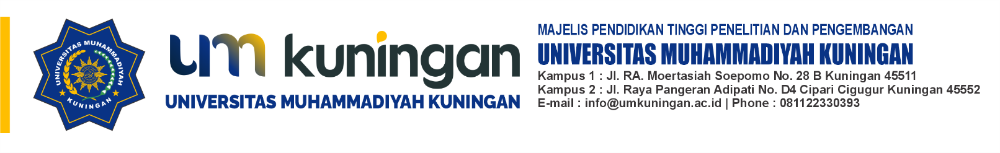

Cetak Dokumen

Nilai Semester Pendek
Nama
:
Riki Muhamad Fadilah
NIM
:
211223049
Program Studi
:
Pendidikan Teknologi Informasi dan Komunikasi
Fakultas
:
Fakultas Pendidikan Sosial dan Teknologi
Jenjang
:
S1 (Sarjana)
NO
KODE
MATA KULIAH
SKS
NILAI
TA
1
MK101
Matematika Dasar
3
A
20211
Petunjuk Mencetak Dokumen
Gunakan browser
Chrome
atau
Firefox
untuk hasil terbaik.
Tekan
CTRL + P
(atau Cmd+P di Mac)
atau klik tombol
Cetak Dokumen
di atas untuk membuka tampilan print.
Set
Destinasi
sesuai kebutuhan Anda.
Simpan ke
PDF
untuk download sebagai file PDF.
Set
Layout
ke "Portrait".
Set
Ukuran Kertas
ke "A4".
Set
Margin
:
Disarankan: "Default" atau "Minimum".
Hindari "None" karena akan menghilangkan margin yang sudah diatur di dokumen.
Set
Skala
ke "Default" atau "100%".
Pastikan opsi
Grafis Latar Belakang
(Background graphics)
Dicentang
. Jika tidak, warna latar belakang header tabel mungkin tidak tercetak.